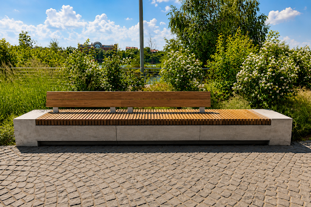
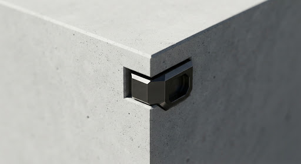
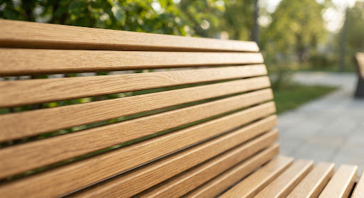

Сквер у театра Камала
Исследование структурной честности и геометрической точности в общественном пространстве. Мебельная система, созданная, чтобы выдержать испытание временем.
Технические характеристики
- Материал 01 Архитектурный бетон
- Материал 02 Натуральное дерево
- Процесс Индивидуальное проектирование
- Характеристики Высокая устойчивость
Структурная целостность как основной принцип проектирования.
Проект площади театра Камала требовал решения, которое преодолело бы разрыв между суровой промышленной полезностью и ориентированным на человека комфортом. Мы использовали бетонное основание нестандартной формы, добившись массивности, которая кажется устойчивой, но более легкой, чем традиционные монолиты.

Fig. 01 — Общий вид инсталляции. Перспективный вид единой сборки.
Красота допуска в 1 пиксель и вес архитектурного постоянства.

Наш бетон отверждается в контролируемых условиях для предотвращения микротрещин, сохраняя первозданную поверхность, которая стареет с достоинством.

Натуральный дуб обработан органическими маслами для защиты от влаги, позволяя при этом естественному рисунку дерева дышать и покрываться патиной в течение десятилетий.
Строим для следующего столетия.
Мы сотрудничаем с дальновидными архитекторами и градостроителями для создания объектов, которые столь же честны, как и материалы, из которых они сделаны. Никаких украшений, только структура.
Хамеев Артур
+7 917 863-66-03
hameevartur@mail.ru